Welcome to a place where music comes alive and reveals its history!
Whether you're a casual listener or a passionate music enthusiast, this website is your gateway to a treasure trove of enthralling musical content.
Here you will explore interesting articles that delve into the history of music, genres, and influential musicians.
All the findings presented on this website are the outcome of an innovative project that made use of the power of knowledge graphs to extract music-related information, with a special focus on the rich musical heritage of Bologna.
The project is dedicated to exploring the rich musical heritage of Bologna and uncovering its intricate connections with the international music scene, by retrieving information from the MusicBo corpus.
By extracting the data available in the Polifonia knowledge graph, we explored the diverse facets of the city's music scene, including influential composers, notable musicians, and cultural organizations that have contributed to the rich musical panorama of Bologna. The retrieved information was also deepened through other endpoints, namely those of Wikidata, DBpedia and ArCo .
Our purpose is to provide a deeper understanding and appreciation of the city's remarkable cultural legacy along with its international impact.
Our stories
1st story:
People and cities in MusicBo
John Patrick Bulseco Nulud
Rita Gramellini
Elisa Mastrorilli
2nd story:
MusicBo Unveiled: Discovering Bologna's Music Organizations and the XVIII Century Violinists
Rita Gramellini
Elisa Mastrorilli
Arianna Mendrano
3rd story:
Melodies from the East: Uncovering Russian Classical Music in MusicBo
Natasha Bevilacqua
John Patrick Bulseco Nulud
Arianna Mendrano
People and cities in MusicBo: Knowledge Graph Overview
The story People and cities in MusicBo: Knowledge Graph Overview delves into the vibrant connections between individuals and cities mentioned in the MusicBo corpus, following both a quantitative and qualitative overview of the corpus' content.
The aim was to highlight the multifaceted influences that shape the city's musical culture. The starting point for this story was the exploration of the “City” and “Person” classes in the Polifonia knowledge graph and, afterwards, the further research of their entities by means of the Wikidata and DBpedia endpoints.
1. Counters
Our initial purpose was to discover the frequency of people and cities mentioned in the MusicBo corpus.
To construct the query, it was essential to determine the correct designation for the entity ‘person’ and ‘city’ within the Polifonia knowledge graph.
To assist in this task, we utilized FRED, a tool specifically designed to transform texts into a frame-based knowledge graph.
The sentences inserted were:
1. Mozart is a person.
2. Bologna is a city.
Here are the results:


Then, we created the following queries, where the variables ?s stands for subject:
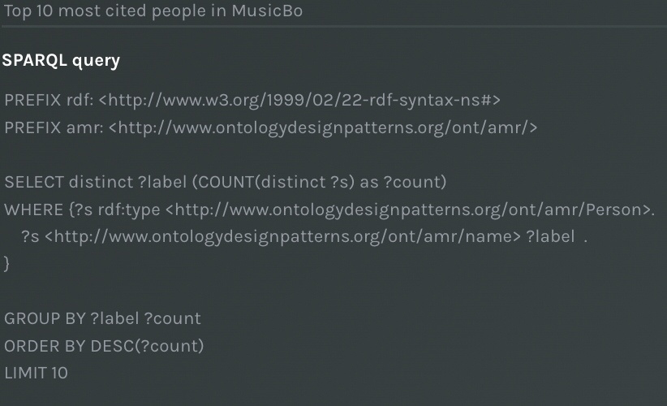
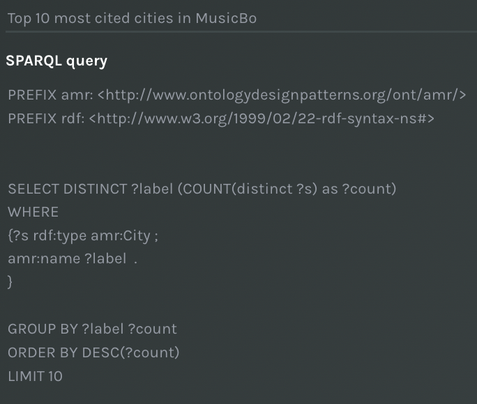
These queries retrieve all the people and cities cited in the corpus. The function (count(distinct ?s as ?count) provides us with the number of mentions without duplicates, as displayed in the pictures below:


Once we ran the queries on Melody for the counter function, the results are displayed as follows:
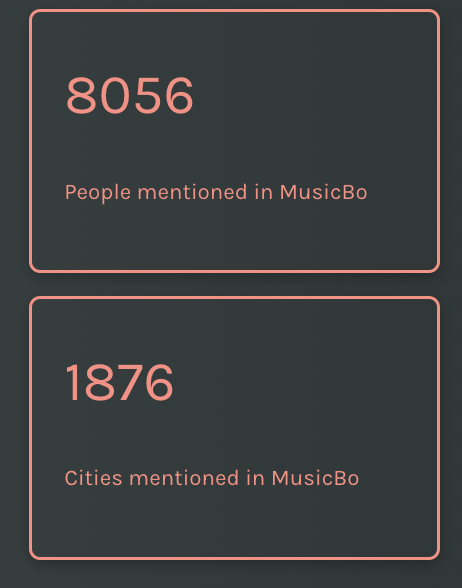
1. Map
To deepen our quantitative study, we decided to discover which cities were specifically mentioned.
After defining all map entities in the MusicBo corpus, we retrieved data about their geographical coordinates from the Wikidata knowledge graph. This was possible thanks to the SERVICE function, which allowed us to include data from the Wikidata endpoint and integrate it with MusicBo data in a single SPARQL query. This tool was particularly important in the creation of the story, as we were able to extend the capabilities of SPARQL and enrich our queries and to obtain more comprehensive results.
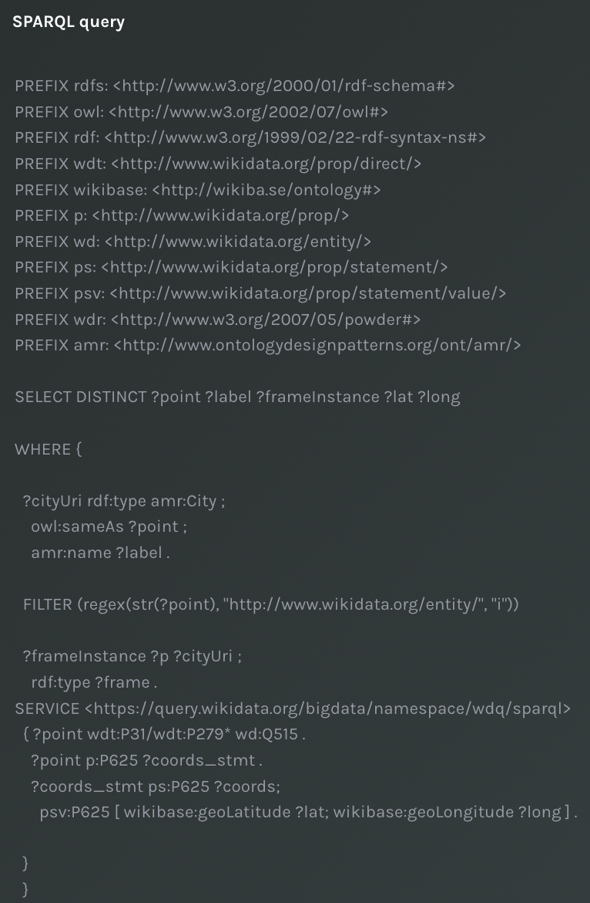
The map below enables us to visualize the results, which show that most cities (1042) are located in Italy.
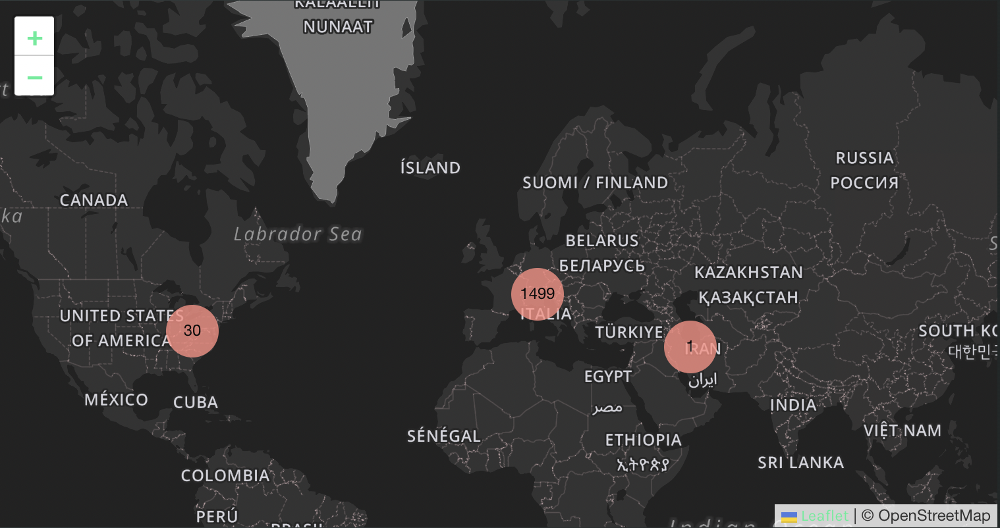
3. Charts
To further develop our research, we created a list of the most mentioned cities and people in the corpus.
The results are shown in a bar chart, which ranks each city and person based on their occurrences.
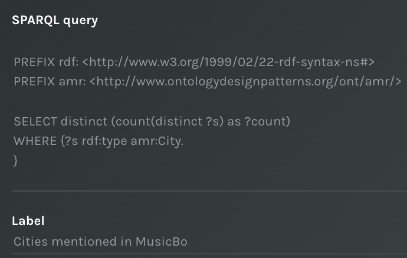
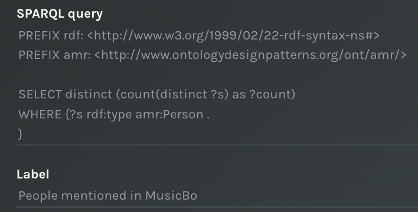
For those two queries, we used the "GROUP BY ?label ?count", which means that the query will generate groups where each group represents a unique combination of city label or person label
and its corresponding count, while the "ORDER BY DESC(?count)" ensures that the results are sorted from the highest count to the lowest count. Finally, the “LIMIT 10” provides only the first 10 results.
The queries’ results were the following:
 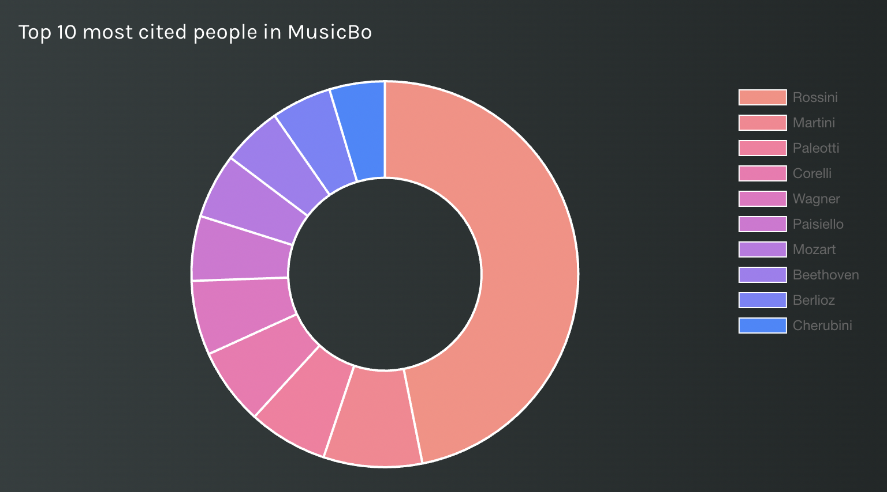
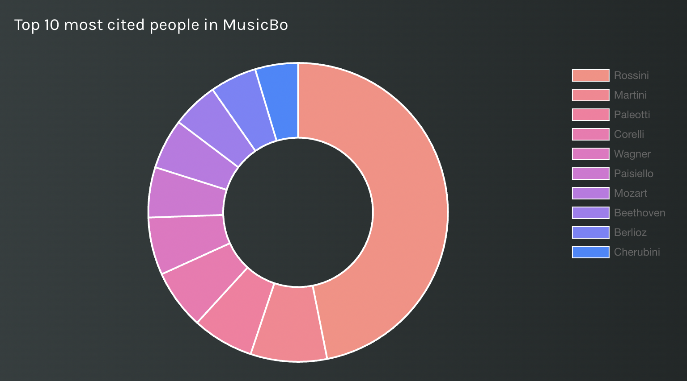
4. Tables
As in the previous function the results show Gioacchino Rossini as the most cited person, we decided to explore some aspects of his life. In order to do so, the Wikidata and Dbpedia knowledge graphs have proved to be very effective at retrieving extra information which was not available in the Polifonia knowledge graph. Once again, the SERVICE function was important for the creation of the tables’ queries, in particular to retrieve information about Rossini’s life and his notable works.
For the first table we used the Wikidata endpoint, as shown in the following query.
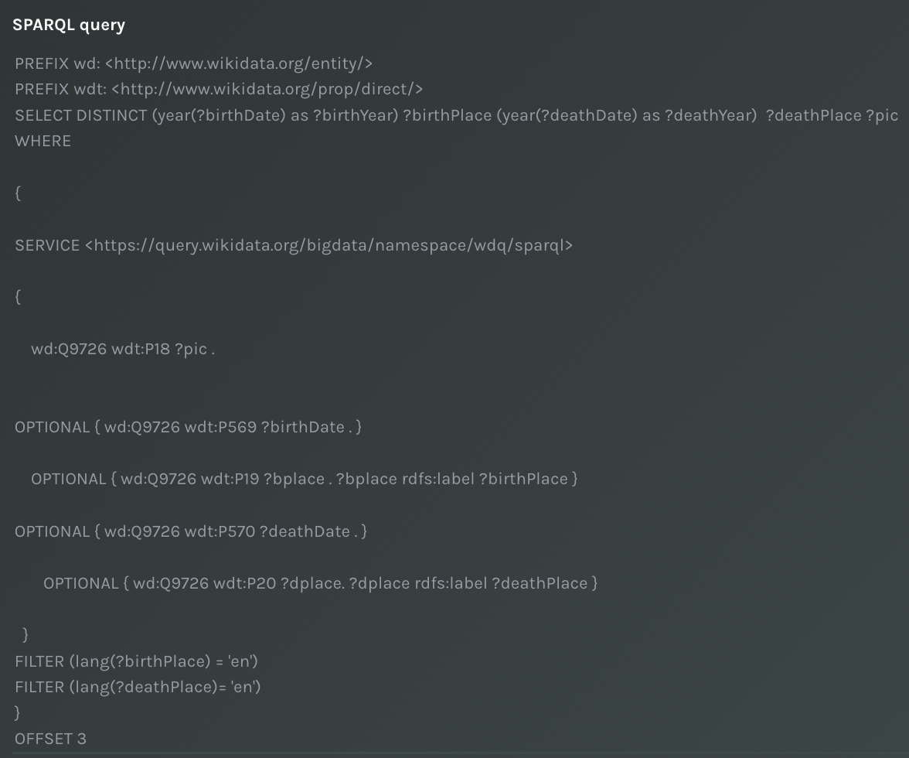
To obtain the date of birth and death as years, we needed to define the date format. To achieve this, we included (year(?birthDate) as ?birthYear) and (year(?deathDate) as ?deathYear) within the “SELECT DISTINCT” clause. These expressions extract the year component from the variable ?birthDate and ?deathDate, respectively, and assign them to new variables named ?birthYear and ?deathYear.
While building the query, we added the “OPTIONAL” filter to include additional data if available, without preventing the query from generating results if the data is absent. However, our query returned all the variables that were set.
An issue we encountered was that of language duplicates. This problem was solved thanks to the FILTER (lang(?label) = “en”) function, which ensured that only English labels are included in the results. This function was chosen over the other FILTER langMatches(lang(?label), “en“) as it also returned other variations of English such as “en-gb”, “en-us”, and so on. Instead, FILTER (lang(?label) = “en”) includes only those results that exactly match the set language condition.
It was then necessary to include an “OFFSET” in order to refine the query. As displayed below, the initial query generated four results. By implementing this function, it was specified to skip the first three results and start from the fourth, which was the final entry. Therefore, the resulting table only displays one outcome.
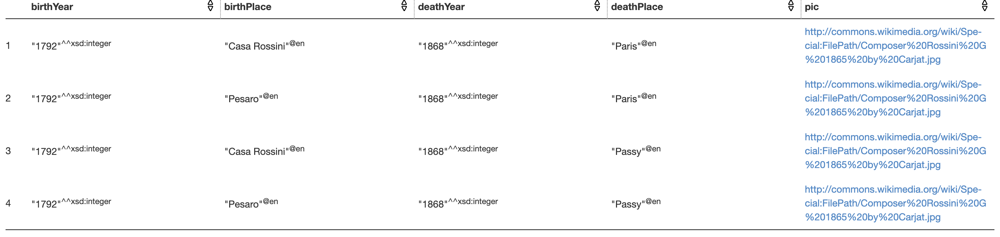
Here is the table as displayed on Melody:
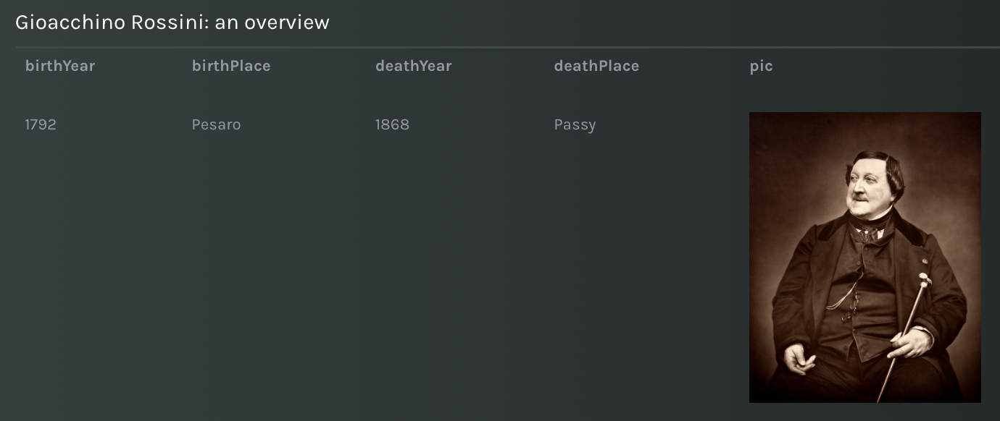
For the second table the chosen endpoint was DBpedia. We followed a “Treasure hunt” approach in order to find Rossini’s URI. Here is the query used:
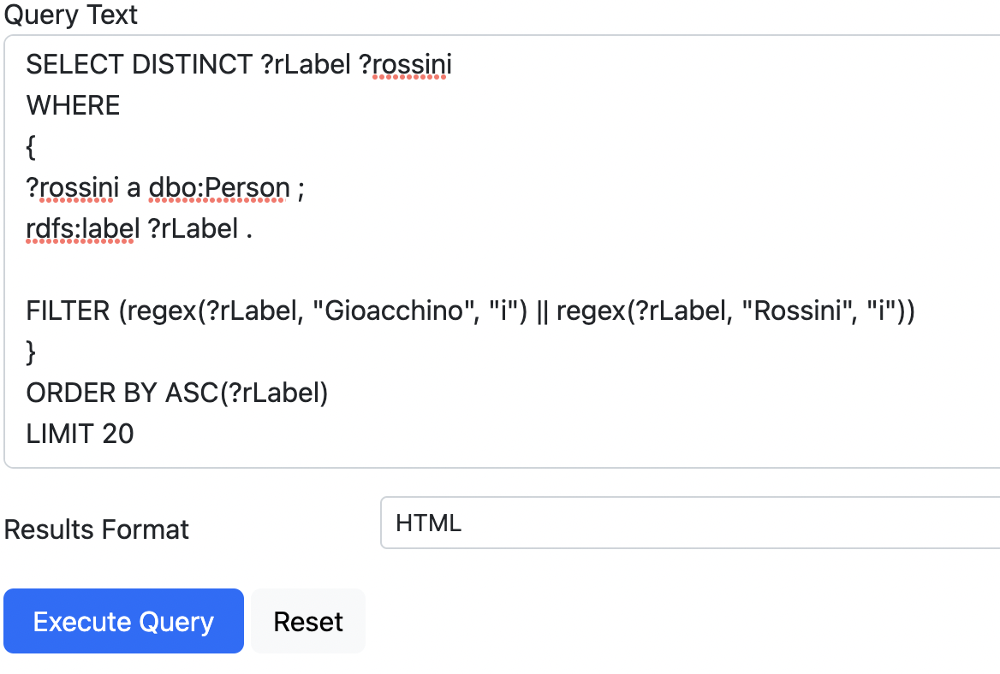
The “FILTER regex” function allowed us to retrieve the label of all people whose name contains “Gioacchino” or “Rossini” (case-insensitive).
Once we found the URI, we were able to build a query that returned all of Rossini’s works, as well their premiere date.
Below you can find the query and the table.
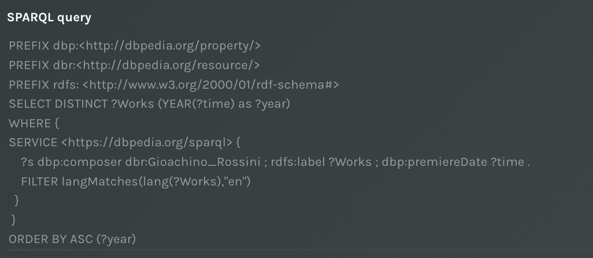
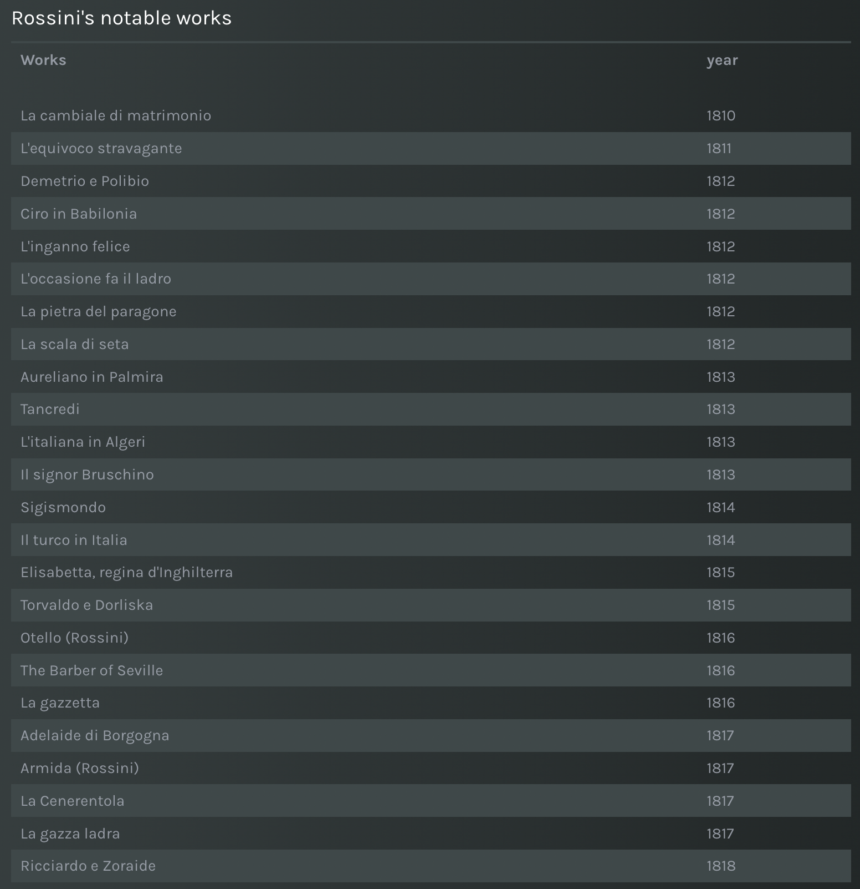
5. Chart
Our next objective was to discover the connection between Rossini and cities, which, perhaps, had been influenced by him and his melodies. Since we already had Rossini’s DBpedia URI, we decided to use it once again to explore the same knowledge graph. In the query Rossini was connected to a variable ?city, which in turn was defined in three triplets united by the UNION function.
This function is indeed useful whenever many resources and classes are found for the same concept, in this case “city”, and therefore to retrieve the most results out of the knowledge graph, as it combines all the results specified in each individual query into a single result set.
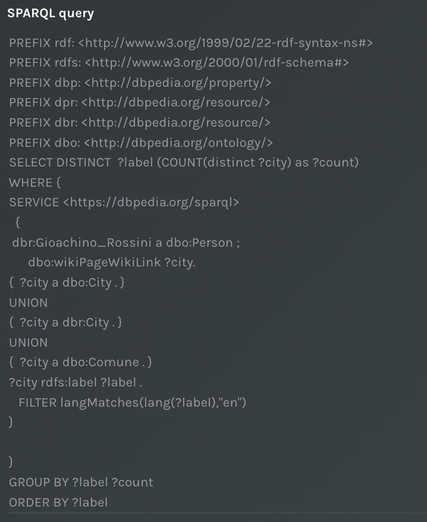
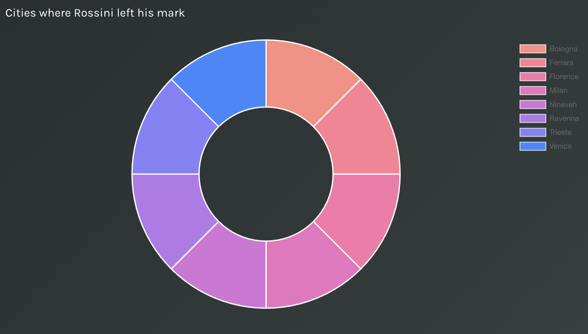
6. MusicBo corpus
After conducting research across various datasets, we interrogated the MusicBo corpus to find out the reasons behind Rossini's popularity. By searching for the keyword “Rossini” within the corpus, we discovered sentences that are particularly representative in this regard.
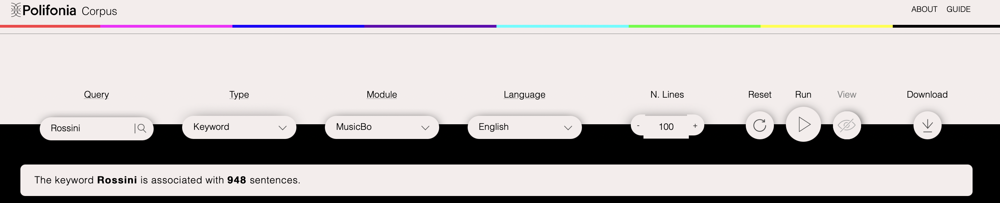
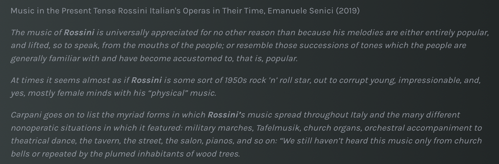
Through the examination of these corpus sentences, we discovered that Rossini is widely acclaimed not only for the fame he achieved during his lifetime but also for the significant impact he had on subsequent musical heritage.
This approach serves as a valuable method for gaining insight into the data extracted from the knowledge graphs and understanding the connections between them.
7. Text search
To further develop our story, we decided to add the text search feature, enabling our viewers to broaden their horizons by looking for other information concerning people within the MusicBo corpus that left a lasting mark in Bologna’s musical landscape.
In this case, the query retrieves information about a person from the Wikidata endpoint based on a search term. It fetches musician’s name, and if available, also the birth and death year, along with an associated image. We employed the “SERVICE” statement to establish a connection with the Wikidata endpoint, ensuring that the extracted results exclusively feature individuals from the Polifonia knowledge graph. The variable ?musician is associated with ?wiki, indicating that the search term should be matched with the musician’s name. Additionally, to ensure the query results are in English, the SERVICE wikibase:label { bd:serviceParam wikibase:language "en".}
was added.
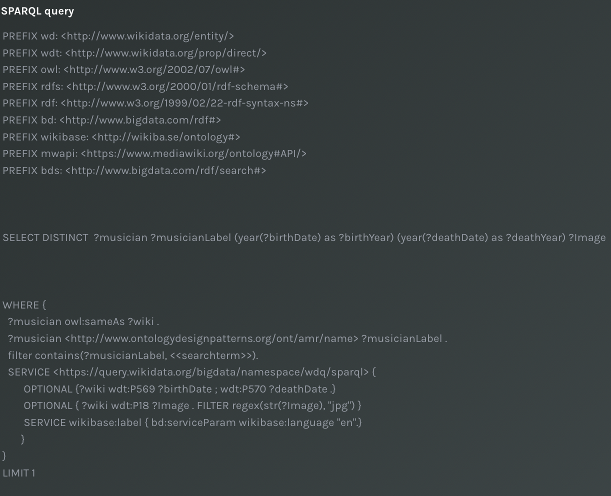
As you can see from the results, by searching for a musician name such as Mozart, it shows the available data.
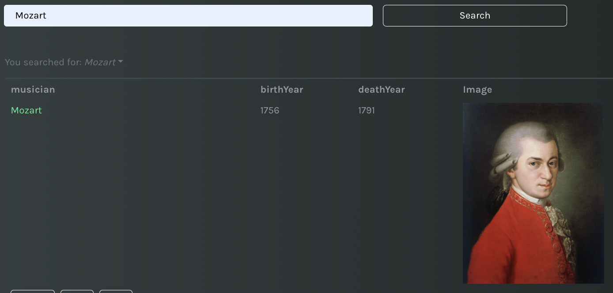
We could have added some other data, like the birth place or the death place, but as there were too many variables, everytime we ran the query on the Polifonia endpoint there was a “proxy error”.
MusicBo Unveiled: Discovering Bologna's Music Organizations and the XVIII Century Violinists
The story
MusicBo Unveiled: Discovering Bologna's Musical Organizations and the XVIII Century Violinists aims at showcasing the music organizations identified in the MusicBo corpus through the interrogation of the Polifonia knowledge graph. Our approach involved moving from a more general point of view to the analysis of particular facets, such as music academies and their features. Particularly, the research began with the exploration of organizations in Bologna and gradually delved into the success of violinists in the XVIII century and their impact on the musical culture.
To deepen our research, we retrieved information on the datasets ArCo and Wikidata.
The basis
As already stated, the primary aim of this project is to offer an overview of the MusicBo corpus and promote the rich musical heritage of Bologna. Following the initial exploration of people and cities mentioned in the corpus, we have decided to expand the project’s scope by delving into other entities that deserve recognition and attention.
To determine the subject of this story, we created a query that presents all the types of entities mentioned in the corpus. By using the “ORDER BY DESC'' function, the results are arranged in descending order, providing insight into the frequency of each entity type within the corpus. This enabled us to identify and prioritise the different types of entities based on their occurrence in the corpus.
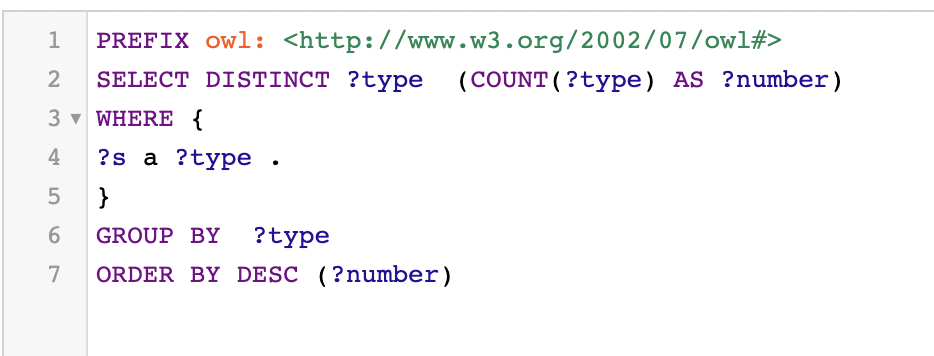
By examining the data, we determined that the organisations were worthy of exploration for our storytelling.
1. Counter
The initial step of this research involved identifying the total number of organisations mentioned in the MusicBo corpus. As indicated by the picture below, the count revealed a total of 307 organisations.
To gain insight into the specific organisations mentioned, the variables in the “SELECT DISTINCT” clause can be replaced with ?slabel. This modification allows for the discovery of the actual organisations’ names, revealing that they mainly consist of academies and music schools. Here is the running query:
(Foto query)
2. Chart
Secondly, we narrowed our research to the top 10 most cited organizations in the corpus. However, when running the query, the results showed us “JSTOR” as one of the main organizations: this is clearly an error.
FOTO
Therefore, we added the FILTER (!regex(str(?label), "jstor",'i')), used to delete an element from the list. This way the shown results were all relevant to the research.
(foto query)
Melodies from the East: Uncovering Russian Classical Music in MusicBo
The story Melodies from the East: Uncovering Russian Classical Music in MusicBo explores the connections between Bologna's musical heritage and the international music scene within the MusicBo corpus. In particular, the main focus was on the Russian musical culture during the 19th century, regarding classical music and notable composers of the time.
Given our passion about Russian language and culture, we chose this theme in order to discover its significance in MusicBo.
In this regard, after initially finding data about composers and their location in the world in the Polifonia knowledge graph, we decided to augment our search by using other endpoints, in particular Wikidata.
1. Counter
Firstly, in order to have a foundation from which we could build our study, we needed to discover the number of worldwide composers, from the 1800s on, in the MusicBo corpus. We achieved this through the interrogation of the Polifonia knowledge graph, starting from the exploration of the Polifonia class “Person”.
However, there was no way to define the 'has occupation composer' predicate, so we had to use the Wikidata endpoint through the SERVICE function. Finally, to remove language duplicates we employed FILTER(lang(?label) = “en”), which gave us only one English variant for each single result.
The structuring of the query required the following steps:
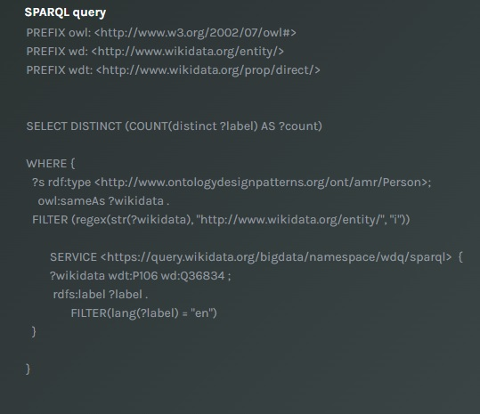
Once we ran the query on Melody for the counter function, the given result was the following:

2. Map
Secondly, from knowing how many composers are mentioned in the corpus, we moved to exploring where these composers can be specifically found. We started from the previous query and added to the person the Wikidata property “country of citizenship” in order to find their position in the world. Here is the query: Secondly, from knowing how many composers are mentioned in the corpus, we moved to exploring where these composers can be specifically found. We started from the previous query and added to the person the Wikidata property “country of citizenship” in order to find their position in the world. Here is the query:


3. Doughnut chart
Having a particular interest in the development of classical music in Russia, we narrowed our research to the top 10 most cited Russian composers in MusicBo.The doughnut chart ranks the composers, from the most mentioned to the least mentioned one, based on their occurrences in the corpus. Once again, we started from the counter query and added a UNION function uniting two triplets that defined the person as having an origin from either Russia or the Russian Empire, since we were not sure to which country people in the 18th-19th century belonged. Below you can find the query and the doughnut chart.
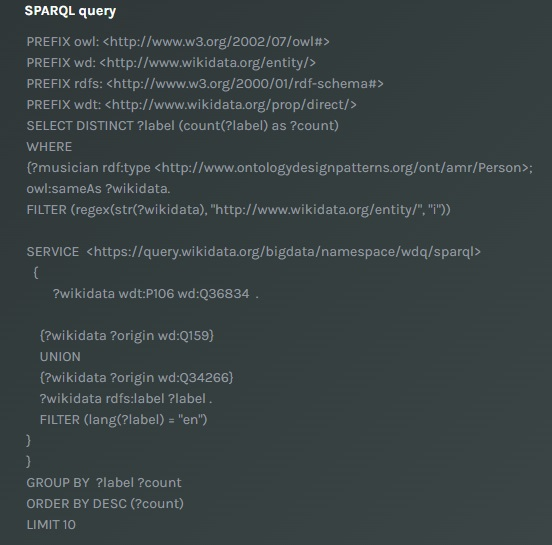
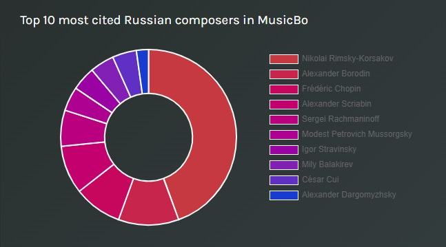
4. MusicBo corpus
In addition, we explored the MusicBo corpus to find more information about the group of Five. In fact, searching for composers' names as keywords, we found several sentences. It was thanks to these sentences that we discovered their significance and profound impact on the triumph of classical compositions in Russia.
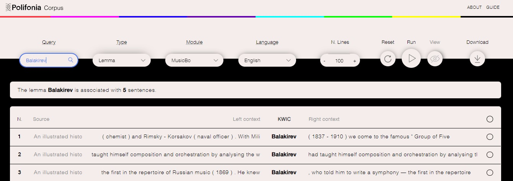
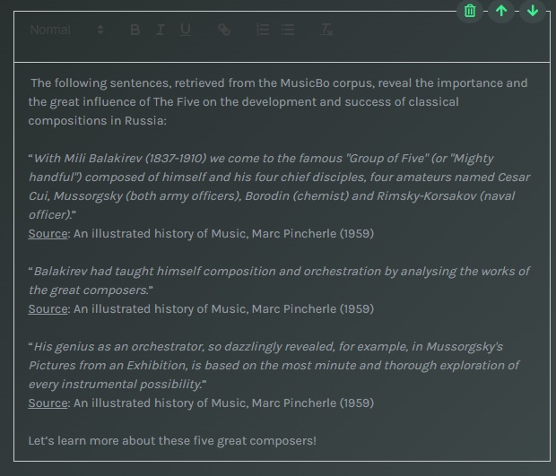
5. Table
To give a more in-depth analysis, our focus moved to analysing 5 of the 10 most mentioned Russian composers, since, through the interrogation of the MusicBo corpus, we found out they are part of the same composition group: The Five or The Mighty Five.
We then created a query that could give us back a table displaying some of the life’s
aspects of these noteworthy composers.
We started the query with the SERVICE function, since we already had found the Wikidata entity for The Five, as well as its properties. The OPTIONAL keyword was used, since we could not be sure that the information we were looking for in Wikidata would be available, therefore we wanted to have the results returned nonetheless for each member. An issue we encountered, however, was specifying the occupation of each member, since we wanted to focus on just one interesting occupation per composer that did not deal with music. Therefore the FILTER regex function was used to limit the results. Finally, we initially added a “Place of death” variable, but the Polifonia returned a “Proxy error”. By simplifying the query, that is by removing a variable, the problem was solved.

As you can see from the results, by searching for the composers, it shows the available data for each of them:
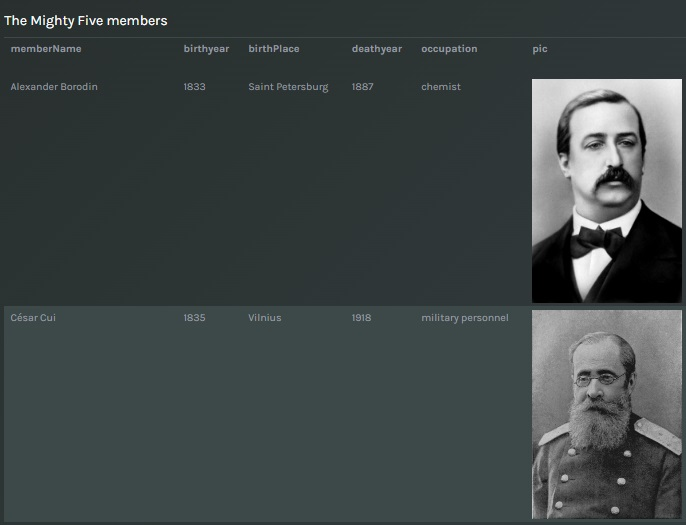

6. Sound table
While exploring the Wikidata page of The Five, we were able to find an audio source of one of their compositions, which we thought would be interesting to add in order to deepen our knowledge about the chosen theme. Interestingly, the audio player would work fine on Google Chrome, but on Safari it did not.
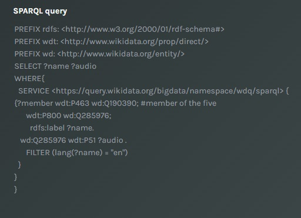
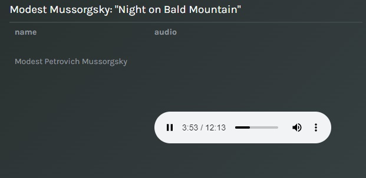
7. Counter
To better explore the Russian musical landscape of the 19th century, we chose to create a query showing the number of composition groups existing at that time.
While we were exploring the results, even though we added in the query the predicate “has origin in Russian Empire” (?composer ?origin wd:Q34266.), we noticed that there were many results not relevant to the research. For this reason, we applied the FILTER (!regex(str(?label), in order to exclude certain labels that contain specific keywords such as “American”, “Swedish”, “Soviet”, and “USSR”.


8. Linechart
Our focus then shifted to works of art composed in Russia, in order to show the variation in time after the influence of classical music in the 1800s. The work of art variable was defined as being composed by an author, who had the citizenship “Russian Empire” used previously.
One of the problems that we encountered in this query was that of year duplicates. We solved this problem by using once again the about function to extract the year within the query, which assigns a value to a variable In simple terms, the BIND keyword is used to assign a value to a variable.
Moreover, initially a FILTER was added to include only results from the 19th century, but then we noticed that with or without the FILTER the results were the same. This is because of the “has origin in Russian Empire” variable definition, which already defined the time. Finally, we had to add the OFFSET 1 keyword at the end of the query, as the first result returned in Polifonia was empty. Because of this null result, the query did not run correctly on Melody.
This variation in time of the Russian works of art can be displayed in the best way by a line chart, for which we created the following query:

Here is the line chart. You can’t see the years since they are too many, but once you click on them, they are visible:

9. Textsearch
Finally, we went back from specific to international by adding a Textsearch that could reveal various composers based on the city they were from.
The problems encountered in the creation of this function were of various nature. In fact, we were constantly faced with a Proxy Error, because of which we had to simplify our query. Firstly, we noticed that the occupation “composer” we assigned to the variable was one of the first issue noticed, therefore we had to find a Wikidata property common to all composers. The triplet “?composer - has genre - classical music” worked. Secondly, our initial purpose was to define the "searchterm" as a country and not a city. However, this led to a more complicated query, since we had to define the composer’s place of birth and its related country. Once again, we simplified the query by only using the place of birth. Finally, since we did not have the Wikidata property “has origin in Russian Empire”, we
added a time FILTER.
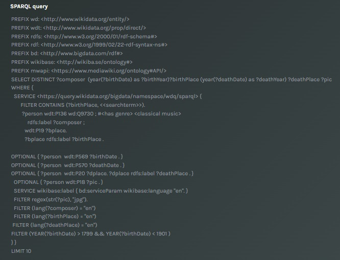

CONCLUSION
In conclusion, our project has shed light on the remarkable cultural legacy and international impact of Bologna's music scene. Through the power of knowledge graphs and the exploration of the MusicBo corpus, we have discovered information about influential composers, notable musicians, and cultural organizations that have shaped the city's musical panorama. Thanks to this exploration, we were able to discover authors who had a great impact on Bologna's musical heritage, but were often left in oblivion, such as Torelli.
By deepening our understanding and appreciation of Bologna's rich musical heritage, we hope to stimulate the passion for music in all its forms. This research serves to uncover the hidden gems of Bologna's musical history.
Let the melodies and stories guide you through the vibrant tapestry of Bologna's musical past, and may this project ignite a sense of wonder and appreciation for the power of music to transcend time and connect people across borders.